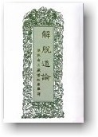
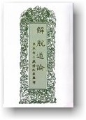

|
GIẢI THOÁT
ĐẠO LUẬN Thiện Nhựt chuyển dịch sang tiếng Việt |
 |
|
BuddhaSasana Home Page |
Vietnamese, with Unicode Times font |
|
|
GIẢI THOÁT
ĐẠO LUẬN Thiện Nhựt chuyển dịch sang tiếng Việt |
 |
|
Quyển Sáu Phẩm 8, Chi 3: Các
Nhứt thiết nhập (tiếp) Hỏi: Thế nào là Nhứt thiết nhập Hư-không? Thế nào là tu, tướng, vị, xứ và công đức? Giữ tướng ấy thế nào? Đáp: Nhứt thiết nhập Hư-không có hai loại: (1) Hư-không lià khỏi sắc; (2) Hư-không chẳng lìa sắc. Tướng của Nhứt thiết nhập Hư-không là Hư-không lìa khỏi sắc. Nắm giữ tướng Hư-không nơi trống vắng là Hư-không còn chưa lià sắc. Tu hành giữ tướng đó khi tâm an trú chẳng loạn động, đó gọi là tu. Từ nơi tưởng về Hư-không mà phóng ý ra, đó gọi là tướng. Chẳng hề lìa tư tưởng về Hư-không là vị (tức là chức năng của Nhứt thiết nhập Hư-không). Sự tác ý (= khởi lên suy nghĩ) chẳng hề sai khác với tư tưởng đó, đó là xứ (tức là phạm vi hoạt động của Nhứt thiết nhập Hư-không). Về công đức (= sự ích lợi) của Nhứt thiết nhập Hư-không, có hai công đức chẳng đồng với các Nhứt thiết nhập khác: (1) vượt xuyên qua chẳng bị ngăn ngại khi gặp tường vách, núi non; (2) thân đi qua lại chẳng ngại, tự tại và chẳng lo sợ.Giữ tướng Hư-không bằng cách nào? Nơi Nhứt thiết nhập Hư-không, nắm giữ tướng Hư-không. Nếu ở nơi thiên nhiên, người quen toạ thiền có thể giữ được tướng Hư-không khi thấy lỗ hổng nơi song cửa, hoặc giữa cây cối, theo đó mà thường nhìn, dầu vui hay chẳng vui cũng sẽ thấy được tướng bỉ phần của Hư-không khởi lên, chẳng giống như người mới tập thiền. Người nầy chỉ thấy được tướng đó ở những nơi có tạo tác, chuẩn bị sẵn, chớ ở nơi thiên nhiên thì chẳng thấy được. Hoặc tại trong nhà, hoặc ở ngoài, nơi chẳng có ngăn ngại, người ấy khoét một lỗ trống nơi tường vách, và khởi lên tưởng về Hư-không. Có ba cách để nắm giữ tướng ấy: (1) nên quán (= nhìn xem kỹ) cho đều đặn, bình đẳng; (2) biết khéo nhìn; (3) tránh nơi loạn động. Nhứt thiết nhập Hư-không đưa đến Tứ thiền, Ngũ thiền. Phần còn lại đã được nói rộng qua trước đây. Nhứt thiết nhập Hư-không chấm dứt. Hỏi: Thế nào là Nhứt thiết nhập Thức? Đáp: Đó là Thức Hư-không, sự nhập định về Thức vô biên xứ. Phần còn lại đã được nói rộng qua trước đây.Mười Nhứt thiết nhập chấm dứt. Hỏi: Thế nào là Tán cú về Nhứt thiết nhập? (tức là các vấn đề linh tinh về Nhứt thiết nhập) Đáp: Nếu một tướng được tự tại (thuần thục), các tướng khác của các Nhứt thiết nhập còn lại cũng được tự tại, tác ý được tùy theo ý muốn. Nếu từ nơi một Nhứt thiết nhập mà vào được Sơ thiền và an trú ở đó, thì các Nhứt thiết nhập còn lại có thể khởi lên Nhị thiền. Như thế, được tự tại ở Nhị thiền, thì có thể khởi lên Tam thiền; từ Tam thiền có thể sang Tứ thiền.Hỏi: Trong các Nhứt thiết nhập, cái nào là tối thắng (= cao đẹp hơn hết)? Đáp: Bốn Nhứt thiết nhập về Màu Sắc là tối thắng, vì thành được sự giải thoát. Nhứt thiết nhập Bạch (= trắng) là tối thắng vì chiếu sáng lên khiến tâm được tự tại. Nhập vào định nơi các nhứt thiết nhập thì đắc được mười sáu việc an tường: (1) khởi lên tướng tùy nơi mình muốn; (2) tùy ý mình thích mà vào định; (3) tùy ý; (4) chẳng trở ngại; (5) đi lên theo thứ tự; (6) đi xuống theo thứ tự; (7) lên và xuống theo thứ tự; (8) khiến tăng trưởng mỗi thứ; (9) khiến tăng trưởng chung; (10) hoặc bỏ đoạn giữa; (11) hoặc bỏ một phần; (12) hoặc bỏ đối tượng; (13) hoặc bỏ một phần và đối tượng; (14) hoặc đầy đủ các phần; (15) hoặc đầy đủ đối tượng; (16) hoặc đầy đủ vừa phần vừa đối tượng. (1) Tùy nơi mình thích là hoặc tại thôn xóm, hoặc nơi yên
vắng, nếu đó là chỗ mình thích thì
liền nhập vào Tam-muội (= chánh định). Phần tán cú (= linh tinh) chấm dứt. Hỏi: Thế nào là Tướng sình chướng? Thế nào là tu, tướng, vị, xứ, công đức của tướng sình chướng? Giữ tướng đó cách nào? Đáp: Tướng s ình chướng là tình trạng sưng phù trướng lên của một xác chết bốc mùi hôi thúi khắp chốn. Nơi tướng sình chướng đó, dùng chánh trí mà biết đến, đó gọi là tưởng sình chướng. Tu theo tưởng đó, tâm an trú chẳng loạn, đó gọi là tu. Quan sát kỹ lưỡng theo đúng nơi tưởng sình chướng ấy gây nên sự chán ghét tướng sình chướng, đó là vị, hay chức năng của tướng sình chướng. Khởi lên ý tưởng (= tác ý) về sự ô uế, bất tịnh (= chẳng sạch), đó là xứ, hay là phạm vi hoạt động của tướng sình chướng. Tướng sình chướng có chín công đức (= ích lợi) giúp cho hành giả: (1) thấy rõ được niệm về nội thân, (2) có được tư tưởng về vô thường, (3) có tư tưởng về sự chết (= tử niệm), (4) được sự nhàm chán về lỗi lầm, (5) khắc phục được các sự ham muốn về giác quan, (6) cắt đứt sự kiêu mạn về sắc đẹp, (7) bỏ được sự kiêu mạn về chẳng bịnh hoạn, (8) hướng về các đường lành, (9) hướng về Niết-bàn.Giữ tướng sình chướng cách nào? Người mới tập thiền hiện giữ tướng sình chướng bất tịnh, một mình đi đến nơi có nhiều tử thi ô uế. Người ấy giữ tâm niệm chẳng động, chẳng ngu si, các căn hướng vào trong, tâm chẳng lang thang bên ngoài. Đến chốn ấy, tránh ngược gió, cách tướng bất tịnh chẳng gần cũng chẳng xa, hoặc ngồi, hoặc đứng dựa. Gần nơi bất tịnh, hoặc có phiến đá, hoặc gò đất, hoặc bụi cây, hay giây leo, người ấy lấy vật nầy làm tướng, vật kia làm đối tượng, rồi khởi lên suy nghĩ: "Phiến đá nầy bất tịnh, đó là tướng bất tịnh; gò đất kia bất tịnh, đó là đối tượng bất tịnh..." Sau khi tướng và đối tượng đã lập xong, người ấy bắt đầu thực tập quán tướng bất tịnh sình chướng, theo mười cách nầy: (1) theo sắc, (2) theo hình nam hay nữ, (3) theo phương hướng, (4) theo xứ sở, (5) theo phân biệt, (6) theo đốt xương, (7) theo lỗ hổng (= khổng huyệt), (8) theo hang hố, (9) theo bằng phẳng, và (10) theo mọi khiá cạnh. (1) Theo sắc là, nếu đen quán
thấy đen, nếu chẳng đen chẳng trắng quán thấy chẳng đen chẳng trắng, nếu
trắng quán thấy trắng, nếu da hôi thúi quán thấy da hôi thúi. Người toạ thiền ấy tùy theo tất cả sự vật mà chánh quán, thấy được tướng sình chướng đó: Lành thay! Lành thay! Như thế mà thọ trì, khéo được tự an. Người toạ thiền ấy đã khéo giữ tướng, đã khéo thọ trì, đã khéo tự an, đi một mình chẳng có bạn, tâm niệm chẳng động, chẳng ngu si, các căn hướng vào trong, tâm chẳng ra ngoài, bước tới bước lui trên đường. Khi đi hoặc khi ngồi, đều quán tướng bất tịnh ấy, tâm thường thọ trì. Chẳng có bạn đồng hành, nghiã là gì? Khiến cho thân được yên tịch. Khiến cho nìệm chẳng động có nghiã là, chẳng ngu si, hướng các căn quay vào trong, tâm chẳng ra ngoài. Đi tới đi lui trên đường, nghiã là gì? Khiến cho thân được yên tịch. Lià nơi ngược gió, nghiã là gì? Vì muốn tránh mùi hôi thúi. Ngồi chẳng gần chẳng xa, nghiã là gì? Nếu ngồi xa, chẳng nắm giữ được tướng. Nếu ngồi gần, chẳng sanh ra chán ghét tướng ấy, chẳng thấy được bản tánh của tướng ấy. Khi chẳng thấy được bản tánh thì tướng ấy chẳng khởi lên, bởi thế cho nên chẳng ngồi gần mà cũng chẳng ngồi xa. Quán tướng khắp mọi khía cạnh, nghiã là gì? Khiến trừ được sự ngu si. Chẳng ngu si là, khi người toạ thiền đến nơi yên vắng, thấy trước mặt tướng bất tịnh, tâm phát lên lo sợ, nếu tử thi có đứng dậy, thì anh cũng chẳng đứng lên, mà tâm lại suy nghĩ: dùng chánh niệm, chánh trí mà quán tướng ấy khắp mọi khiá cạnh; cứ như thế mà tác ý, đó là chẳng ngu si. Hỏi: Nắm giữ tướng bất tịnh theo mười cách, nghiã gì? Đáp: Vì để cột tâm lại nơi tướng mà quán.Đi tới đi lui tr ên đường, nghiã gì? Để có thứ tự trong việc thực tập theo pháp. Thực tập thứ tự theo pháp nghiã là, dầu người toạ thiền đã đến nơi yên vắng, nhưng tâm có lúc xao động, nếu chẳng thường quán, thì tướng bất tịnh chẳng khởi lên, bởi thế cho nên người ấy phải luôn luôn nhiếp tâm, phải quán khi đi tới đi lui trên đường, phải quán khi ngồi, phải quán khắp mọi khía cạnh, phải quán theo mười cách nói trên để nắm giữ tướng. Người toạ thiền ấy quán như thế nhiều lần, cho đến khi tướng khởi lên như thấy được trước mắt, đó là có tiến bộ trong việc thực tập thứ tự theo pháp.Người mới tập thiền quán tướng tử thi xem như trân bảo, tâm sanh hoan hỉ, thường thọ trì tu hành, diệt được các triền cái, khởi lên các thiền chi. Người ấy lià được các ham muốn, và các pháp chẳng lành, có giác, có quán, an tịch khiến sanh mừng (hỉ), vui (lạc), nhập vào định của Sơ thiền, qua tướng sình chướng. Hỏi: Tại sao Tướng bất tịnh khởi lên Sơ thiền mà chẳng khởi các Thiền khác? Đáp: Cách nầy vì khởi lên sự quán làm thành một nơi cột buộc tâm, thường tùy vào đó mà giác quán; khi có giác quán thì tướng mới hiện được, chẳng giác quán thì tướng chẳng hiện lên; bởi thế chỉ khởi lên có Sơ thiền, còn các thiền khác chẳng khởi. Lại có thuyết cho rằng, nơi tướng bất tịnh nầy, sắc, hình, và các thứ khác, chẳng do cùng một cách tư duy mà khiến khởi lên; khi tư duy, các thứ sắc, hình, là đối tượng của giác và quán, nếu lìa giác quán thì tư duy về chúng chẳng thành được, do đó chỉ có Sơ thiền khởi lên, các thiền khác chẳng khởi. Lại còn có thuyết cho rằng, tướng bất tịnh là một đối tượng chẳng kham chịu đựng, tâm khó cất lên nổi. Tại một nơi bất tịnh, mừng vui chỉ có thể khởi lên khi nào khéo léo dẹp bỏ được giác và quán về đối tượng khó kham chịu là hôi thúi, do đó chỉ có Sơ thiền khởi lên thôi, các thiền khác thì không.Hỏi: Trước một đối tượng khó kham chịu đựng, vì sao khởi lên được hỉ (= mừng) và lạc (= vui)? Đáp: Đối tượng khó kham chịu được chẳng phải l à nguyên nhân làm khởi lên mừng vui. Vả lại, do khéo léo dẹp bỏ được sức nóng bức của triền cái, tâm được tự tại, mừng vui mới khởi lên. Các điều còn lại đã được nói rộng qua trước đây.Tướng sình chướng chấm dứt. Hỏi: Thế nào là tướng bầm xanh? Thế nào là tu, tướng, vị xứ, công đức? Giữ tướng ấy cách nào? Đáp: Tướng bầm xanh là, hoặc chết một đêm, hay hai ba đêm, thân thành tướng bầm xanh, như bị nhiễm màu tái xanh, đó gọi là tướng bầm xanh. Lấy chánh trí mà biểu biết về tướng đó, là tưởng bầm xanh. Tâm an trú chẳng loạn nơi tướng đó, gọi là tu. Sự thọ trì tướng bầm xanh là tướng. Chán ghét là vị, tức là chức năng của tướng bầm xanh. Ý tưởng về sự chẳng kham chịu nổi là xứ, tức là phạm vi hoạt động của tướng bầm xanh. Công đức (= sự ich lợi) cũng giống như Tướng sình chướng. Nắm giữ tướng ấy cách nào, giống như đã nói rộng qua trước đây.Tướng bầm xanh chấm dứt. Hỏi: Thế nào là tướng rỉ mủ? Thế nào là tu, tướng, vị, công đức? Giữ tướng ấy cách nào? Đáp: Rỉ mủ là, hoặc chết hai, ba đêm, mủ máu rỉ chảy ra như chất bơ trâu rưới khắp châu thân, đó gọi là rỉ mủ. Nơi tướng rỉ mủ, lấy chánh trí mà hiểu biết, đó gọi là tưởng rỉ mủ. Tâm am trú chẳng loạn nơi tưởng đó, gọi là tu. Thọ trì tướng rỉ mủ là tướng. Ghê chán là vị, hay chức năng của tướng rỉ mủ. Khởi lên ý chẳng kham chiụ nổi là xứ, tức là phạm vi hoạt động của tướng rỉ mủ. Công đức (ích lợi) của tướng rỉ mủ cũng giống như tướng sình chướng. Về cách nắm giữ tướng rỉ mủ, có thể biết được, như đã nói rộng qua ở trước.Tướng rỉ mủ chấm dứt. Hỏi: Thế nào là tướng đâm chém nát? Thế nào là tu, tướng, vị, xứ, công đức của tướng đâm chém nát? Giữ tướng đó cách nào? Đáp: Đâm chém nát l à, hoặc dùng dao, kiếm đâm chém thân thể nát ra. Lại nữa, khi vứt bỏ tử thi, đó cũng gọi là đâm chém nát. Nơi bị đâm chém nát mà dùng chánh trí để hiểu biết, đó gọi là tưởng đâm chém nát. Tâm trú chẳng loạn vào tưởng đó, gọi là tu. Suy gẫm đến tướng đâm chém nát là tướng; khởi sanh sự chán ghét tướng đó là vị, hay chức năng của tướng đâm chém nát. Có ý tưởng về sự bất tịnh (= chẳng sạch) là xứ, hay phạm vi hoạt động của tướng đâm chém nát. Công đức, hay sự ích lợi, giống như tướng sình chướng.Hỏi: Nắm giữ tướng đó cách nào? Đáp: Nắm giữ tướng đâm chém nát tại nơi hai vành tai hay hai ngón tay tách khỏi thân thể, cách một hai khoảng trống. Phần còn lại nói về tướng nầy cũng giống như đã được nói rộng qua trước đây.Tướng đâm chém nát chấm dứt. Hỏi: Thế nào là tướng bị gặm nhấm? Thế nào là tu, tướng, vị, xứ, công đức? Giữ tướng đó cách nào? Đáp: Bị gặm nhấm là, hoặc quạ, chim thước, chim ưng, chim điêu, chím thứu, chó, cọp, sói, beo cắn xé, đó gọi là bị gặm nhấm. Nơi tướng ấy, dùng chánh trí mà hiểu biết, gọi là tưởng bi gặm nhấm. Tam trú vào tướng đó chẳng loạn, gọi là tu. Tư tưởng về sự bị gặm nhấm là tướng. Khởi lên sự chán ghét là vị, hay chức năng của tướng bị gặm nhấm. Có ý tưởng về sư bất tịnh (= chẳng sạch) là xứ, hay phạm vi hoạt động của tướng bị gặm nhấm. Sự ích lợi (công đức) của tướng nầy giống như tướng sình chướng. Chỗ còn lại cũng như đẵ được nói rộng qua trước đây.Tướng bi gặm nhấm chấm dứt. Hỏi: Thế nào là tướng vứt bỏ rã rời? Thế nào là tu, tướng, vị, xứ, công đức? Giữ tướng đó cách nào? Đáp: Vứt bỏ là, đầu mình và tay chơn bị phân tán rã rời, vứt bỏ đó đây khắp nơi. Nơi tướng bị vứt bỏ đó, dùng chánh trí mà hiểu biết, gọi là tưởng vứt bỏ rã rời. Tâm trú chẳng loạn vào tướng nầy là tu. Thọ trì tưởng vứt bỏ rã rời là tướng. Sự chán ghét là vị, hay chức năng của tướng vứt bỏ rã rời. Có ý tưởng về sự bất tịnh (= chẳng sạch) là xứ, hay phạm vi hoạt động của tướng ấy. Công đức (ích lợi) của tướng nầy giống như tướng sình chướng.Nắm giữ tướng vứt bỏ rã rời cách nào? Gom hết các phần thân thể lại tại một nơi, sắp xếp các phần cách nhau chừng đôi phân, rồi khởi lên tướng vứt bỏ rã rời để nắm giữ. Phần còn lại như đã được nói rộng qua trước đây. Tướng vứt bỏ rã rời chấm dứt. Hỏi: Thế nào tướng giết chết vứt bỏ? Thế nào là tu, tướng, vị, xứ, công đức? Giữ tướng ấy cách nào? Đáp: Bị giết chết vứt bỏ là, hoặc do đao, gậy, hoặc do cung tên, đâm chém khắp nơi trên thân người chết và vứt bỏ đi. Nơi tướng đâm chém giết hại đó, dùng chánh trí mà hiểu biết đến, gọi là tưởng giết chết vứt bỏ. Tâm trú chẳng loạn vào tướng ấy, là tu. Thọ trì tưởng giết chết vứt bỏ là tướng. Khởi lên sự chán ghét là vị, hay chức năng của tướng đó. Có ý tưởng về sự bất tịnh (= chẳng sạch) là xứ, hay phạm vi hoạt động của tướng giết chết vứt bỏ. Công đức (ích lợi) của tướng nầy cũng giống như tướng sình chướng. Nắm giữ tướng ấy cách nào, như đã được nói rộng qua trước đây.Tướng giết chết vứt bỏ chấm dứt. Hỏi: Thế nào là Tướng dính máu huyết? Thế nào là tu, tướng, vị, công đức? Giữ tướng đó cách nào? Đáp: Dính máu huyết là, hoặc chém đứt đầu mình tay chơn lià ra, máu đổ dính đầy thân thể. Nơi tướng dính máu đó, dùng chánh trí mà hiểu biết, đó gọi là tưởng dính máu huyết. Tâm trú chẳng loạn nơi tướng ấy là tu. Thọ trì tư tưởng dính máu huyết là tướng. Khởi lên sự chán ghét là vị, hay chức năng của tướng đó. Có ý tưởng về sự bất tịnh (= chẳng sạch) là xứ, hay phạm vi hoạt động của tướng dính máu huyết. Công đức (ích lợi) của tướng nầy cũng giống với tướng sình chướng.Nắm giữ tướng nầy cách nào đã được nói rộng qua trước đây. Tướng dính máu huyết chấm dứt. Hỏi: Thế nào là tướng trùng hôi? Thế nào là tu, tướng, vị, xứ, công đức? Giữ tướng đó cách nào? Đáp: Trùng hôi là, các loại trùng sanh sản khắp thi thể, tụ lại giống như trái châu trắng. Nơi tướng trùng hôi đó, dùng chánh trí mà hiểu biết đến, gọi là tưởng trùng hôi. Tâm trú chẳng loạn vào tướng ấy là tu. Thọ trì tư tưởng trùng hôi là tướng. Khởi lên sự chán ghét là vị, hay chức năng của tướng trùng hôi. Có ý tưởng về sự bất tịnh (= chẳng sạch) là xứ, hay phạm vi hoạt động của tướng ấy. Công đức (ích lợi) cũng giống với tướng sình chướng.Nắm giữ tướng trùng hôi cách nào, cũng giống như đã nói rộng qua trước đây. Tướng trùng hôi chấm dứt. Hỏi: Thế nào là tướng xương? Thế nào là tu, tướng, vị, xứ, công đức? Giữ tướng ấy cách nào? Đáp: Xương là, các khúc xương còn dính liền nhau như móc câu nhờ máu, thịt và gân nối lại, hoặc chẳng còn máu thịt chỉ còn gân. Nơi tướng xương đó, dùng chánh trí mà hiểu biết đến, đó gọi là tưởng xương. Tâm trú chẳng loạn vào tướng ấy, là tu. Thọ trì tưởng xương là tướng. Khởi lên sự chán ghét là vị, hay chức năng của tướng xương. Có ý tưởng về sự bất tịnh (chẳng sạch), là xứ, hay phạm vi hoạt động của tướng xương. Công đức (ích lợi) cũng giống như trường hợp tướng sình chướng. Giữ tướng xương cách nào, đã được nói rộng qua ở trước.Tướng xương chấm dứt. Hỏi: Về bất tịnh xứ (= các nơi dơ), có các vấn đề linh tinh (= tán cú) nào? Đáp: Người mới tập thiền có nhiều phiền não nặng nề, chẳng nên nắm giữ tướng chẳng cùng một loại phiền não. "Chẳng cùng một loại phiền não" có nghiã như thân người nam với thân người nữ. Nếu nghiệp chẳng thanh tịnh, chẳng nên nhơn tướng bất tịnh mà tác ý. Tại sao vậy? Vì thường quán về đối tượng ấy, nên sự nhàm chán chẳng khởi sanh lên. Nơi thân súc sanh, chẳng khởi được tưởng tịnh. Nơi một khúc xương, nếu tướng xương khởi lên, nên nắm giữ lấy cho thuần thục. Đối với một đống xương, cũng lại như thế. Nếu tướng bất tịnh do từ sắc mà khởi lên, nên quán nhứt thiết nhập. Nếu tướng ấy khởi lên từ hư không, nên quán tướng nam. Nếu tướng bất tịnh khởi, nên quán về bất tịnh.Hỏi: Tại sao chỉ có mười tưởng bất tịnh, chẳng nhiều hay chẳng ít hơn? Đáp: Vì sự lỗi lầm của thân có mười loại. Lại nữa có mười loại tánh người, thành ra có mười loại tưởng về bất tịnh. Người nhiều tham dục nên quán tướng sình chướng. Người tham ái sắc dục nhiều, nên quán tướng bầm xanh; người muốn tịnh lòng dục nên quán tướng rỉ mủ; các hạng người còn lại có thể suy ra để tự biết được.Lại nữa, tưởng bất tịnh rất khó đắc được, bởi vì tất cả các tưởng bất tịnh là để đối trị lòng dục. Vì thế, nếu người nhiều lòng dục thấy được tướng bất tịnh, nên liền nắm giữ lấy. Bởi lẽ ấy mới nói tất cả các tuớng bất tịnh thuộc vào mười loại tưởng bất tịnh. Hỏi: Tại sao chẳng khiến các tướng bất tịnh tăng trưởng lên? Đáp: Nếu có người muốn chán ghét lòng ham muốn, người ấy nên khiến khởi lên tự tánh về thân tướng của mình. Tại sao? Nếu có được tưởng về tự tánh của thân mình, nhờ đó mau khởi lên sự chán ghét mà đắc được tướng bỉ phần. Nếu khiến cho tướng bất tịnh tăng trưởng thêm, thì thân tưởng lại bị mất, khiến cho sự chán ghét chẳng mau khởi lên được. Vì lẽ đó, chẳng nên khiến tướng bất tịnh tăng trưởng thêm.Lại có thuyết cho rằng, người đã dứt được ham muốn, muốn tu thành đại tâm, nên tăng trưởng tướng bất tịnh, như trong A-tỳ-đàm (Abhidhamma, Luận tạng) có nói: "Người đã ly dục nhập vào Sơ thiền, trú trong chánh thọ về tướng sình chướng, khởi lên được đối tượng vô biên." Như Đại đức Singalapita có nói kệ: "Tỳ-kheo hưởng gia tài Phật, Hỏi: Thế nào là Niệm Phật? Thế nào là tu, tướng, vị, xứ, công đức? Tu hành niệm Phật cách nào? Đáp: Phật là, được đời tôn trọng, tự nhiên chẳng có thầy mà hiểu đứng đắn Chơn lý nhiệm mầu chưa từng nghe nói đến, biết tất cả, đầy đủ quyền lực và tự tại, đó gọi là Phật. Niệm Phật là niệm Đức Phật, Thế tôn, chánh biến tri, công đức đạo Bồ-đề. Niệm phải theo sát niệm, chẳng mất niệm căn và niệm lực, luôn luôn giữ niệm trong chánh niệm, đó gọi là niệm Phật. Tâm an trú chẳng loạn là tu. Khiến khởi lên công đức của Phật là tướng. Sanh lòng cung kính là vị, hay chức năng của việc niệm Phật. Làm cho lòng tin được tăng thêm lên là xứ, hay phạm vi hoạt động của việc niệm Phật. Nếu tu hành niệm Phật thành thì đắc được mười tám công đức: có sự tăng trưởng về (1) niềm tin; (2) niệm; (3) trí huệ; (4) cung kính; (5) công đức; (6) được nhiều hoan hỉ; (7) kham chịu được khổ hạnh; (8) lià xa sự lo sợ; (9) đối vớc các pháp chẳng lành, biết tự thẹn (tàm) và biết xấu hổ với người (qúi); (10) thường được gần thầy; (11) tâm vui nơi đất Phật; (12) đi hướng về nẻo lành; (13) sau rốt chứng được Niết-bàn...Như có nói trong Kinh Niết Để (Netri Sutra), "Người muốn niệm Phật, phải nên kính ngưỡng nơi có tượng Phật." Thế nào là tu hành? Người mới tập thiền đi đến nơi yên vắng, nhiếp tâm chẳng loạn, lấy tâm chẳng loạn ấy mà niệm: Như Lai Thế tôn, Ứng cúng, Chánh biến tri, Minh hạnh túc, Thiện thệ, Thế gian giải, Vô thượng sĩ, Điều ngự trượng phu, Thiên nhơn sư, Phật, Thế tôn. Do tất cả các công đức đó, Ngài đã đến bờ bên kia. Thế tôn là, được thế gian khen ngợi, nên gọi là Thế tôn; lại được diệu pháp, nên gọi là Thế tôn; được sự cúng dường, nên gọi là Thế tôn; đầy đủ phước đức, nên gọi là Thế tôn; làm bực giáo chủ, nên gọi là Thế tôn; do các nhân duyên đó nên gọi là Thế tôn. Cũng do các nhân duyên đó và được sự cúng dường, nên gọi là A-la-hán. Đã giết xong các giặc phiền não, nên gọi là A-la-hán. Bẻ gãy vòng sanh tử, nên gọi là A-la-hán. Chánh biến tri là, biết rõ thật đứng đắn tất cả mọi hành động, mọi pháp, nên gọi là chánh biến giác (chánh = chơn chánh, đứng đắn; biến = khắp cả; giác = biết); lại diệt được vô minh (= sự ngu tối), nên gọi là chánh biến giác; do tự lực chính mình mà được đạo Bồ-đề vô thượng, nên gọi là chánh biến giác. Minh hạnh túc là, minh là ba minh: (1) túc mạng minh, (2) chúng sanh sanh tử minh, (3) lậu tận minh. Thế tôn dùng trí túc mạng minh (= biết đời trước) cắt đứt sự vô minh trong quá khứ, dùng trí sanh tử minh (= biết lẽ sống chết) cắt đứt sự vô minh trong tương lai, và trí lậu tận minh (= tận diệt các phiền não) cắt đứt sự vô minh trong hiện tại. Đã cắt đứt xong sự vô minh trong quá khứ, Thế tôn khi niệm đến quá khứ liền thấy tất cả hành động về đời trước hiện lên. Đã cắt đứt sự vô minh trong tương lai, Thế tôn khi niệm đến tương lai liền thấy tất cả hành động vào đời sau hiện lên. Đã cắt đứt sự vô minh trong hiện tại, Thế tôn khi niệm đến hiện tại liền thấy tất cả hành động trong hiện tại hiện lên. Hạnh là, giới và định đều đầy đủ. Giới là, có đầy đủ tất cả các pháp lành, nên gọi là minh hạnh túc (túc = đầy đủ); lại có đầy đủ các thần thông, nên gọi là minh hạnh túc. Đầy đủ là, Thế tôn đắc tất cả định. Như thế, do nhứt thiết trí (= trí hiểu biết tất cả mọi sự vật), do ba minh và do chánh hạnh, Thế tôn đắc đại từ bi, làm lợi ích cho cả thế gian, nên được sự tự tại. Do biết khắp cả mọi cõi, Ngài luận Đạo chẳng ai thắng nổi. Đã diệt xong các phiền não, do chánh hạnh thanh tịnh, do đầy đủ ba minh, Ngài là con mắt của thế gian hiện đem lợi ích đến nơi nào còn thiếu lợi ích. Do đầy đủ các hạnh, Ngài thành nơi nương tựa của thế gian, cứu vớt mọi sự lo sợ. Do minh trí giải thoát theo ý nghiã bực nhứt, do đắc sự thông đạt, do chánh hạnh, Ngài thành bực tế độ cho cả thế gian. Nơi tất cả mọi sự việc, chẳng cần học với thầy nào, bằng vào hành động thật bình đẳng, Ngài đắc được sự an tịch vô thượng. (...) Thiện thệ là, tới được nơi đường lành, nên gọi là thiện thệ. Chẳng hề lùi trở lại, đã đến cõi Niết-bàn vô vi, nên gọi là thiện thệ. Lại nữa, nói pháp chẳng điên đảo, nên gọi là thiện thệ. Pháp của Ngài chẳng chút tì vết, nên gọi là thiện thệ. Pháp của Ngài chẳng chút lỗi lầm, nên gọi là thiện thệ. Pháp của Ngài chẳng nhiều cũng chẳng ít, nên gọi là thiện thệ. Thế gian giải là, thế gian có hai thứ: (1) chúng sanh thế gian và (2) hành thế gian. Thế tôn, qua tất cả hành động, biết rõ mọi chúng sanh trên thế gian, Ngài biết mọi ham muốn của họ, mọi căn cơ sai biệt, mọi đời sống kiếp trước. Ngài dùng thiên nhãn theo dõi sự chết đi sanh lại, sự hoà hiệp, sự thành tựu, loài nào dễ cảm hóa, loài nào chẳng kham giáo hoá, mọi nẻo tái sanh, mọi đưởng lành dữ, mọi nghiệp báo, mọi loại phiền não, mọi pháp thiện ác, mọi sự trói buộc cởi mở. (...) Lại nữa, Thế tôn biết tất cả mọi hành (= mọi hành vi tạo nghiệp), qua các nhân và các quả của nghiệp, qua định tướng, qua tự tướng, qua nhân duyên lành, chẳng lành, và vô ký, qua mọi ấm, giới, và nhập, qua sự biết rõ về vô thường, khổ, vô ngã, qua sự sanh, sự bất sanh, tất cả mọi hành như thế. (...) Vô thượng là, ở thế gian, chẳng gì cao hơn nữa, chẳng có ai bằng được, tối thắng chẳng ai so sánh được, chẳng ai vượt qua nổi, nên gọi là vô thượng. Điều ngự trượng phu là, có ba hạng người: (1) nghe pháp liền ngộ, (2) nghe thuyết về nhân duyên; (3) nghe thuyết về đời kiếp trước, nhưng Thế tôn lại còn điêu luyện thuần thục con đường giải thoát tám ngành nữa, nên thâu phục và thuần hoá được chúng sanh, mới gọi là vị điều ngự trượng phu.Thiên nhơn sư là, Thế tôn hay độ thoát cho Trời, người, qua khỏi cảnh sanh, già, chết, trong rừng đời đầy lo sợ, nên gọi là Thầy của Trời và người. Lại nữa, Ngài dạy cho thấy con đường Đạo, nên gọi là thầy của Trời và người. Do môn nầy, do việc tu hành nầy, người toạ thiền nên như thế mà niệm Như Lai. Lại nữa, theo lời dạy của thầy bổn sư, có bốn cách để niệm công đức của Phật Thế tôn: (1) do nhân duyên tích xưa, (2) do khởi tự thân, (3) do đắc được pháp tối thắng, (4) do làm lợi ích cho chúng sanh. Từ sở nguyện ban sơ cho chí đến đời sống cuối cùng, trong khoảng giữa thời gian dài lâu hai mươi a tăng kỳ kiếp, Ngài đã quán thấy hàng trăm ngàn ức chúng sanh với căn cơ của họ, nên sanh lòng thương xót chúng sanh ở thế gian: "Ta đã được giải thoát, phải nên khiến họ được giải thoát; Ta đã nhập Niết-bàn, phải nên khiến họ được nhập Niết-bàn." Bố thí, trì giới, xuất ly, nhẫn nhục, diệu đế, thọ trì, từ, xả, tinh tấn, trí huệ, tất cả các công đức đều đầy đủ, nên Ngài mới đắc đạo Bồ-đề. Thế tôn có nói về sự tích bổn sanh của Ngài, lúc còn ở quả vị Bồ-tát, như Ngài từng sanh làm con thỏ thường theo hạnh bố thí. Về sự tích sanh làm Khả hộ (Samkhapàla), nên niệm trì giới; về sự tích sanh làm Ma-ha Cồ-tần-đà (Maha Govinda), thì niệm hạnh xuất ly; về sự tích sanh làm Phổ minh (Khanti) thì niệm hạnh nhẫn nhục; về sự tích sanh làm Ổ-kiến (Maha Sutasoma) thì niệm hạnh thực ngữ (= nói lời chơn thật); về sự tích sanh làm Đế-Thích (Sakkha), niệm hạnh từ bi; về sự tích sanh làm Mao thụ (Lomahamsa) thì niệm hạnh xả; về sự tích sanh làm thương chủ, thì niệm hạnh chánh trực; về sự tích sanh làm con chương (= nai con), thì niệm hạnh trí huệ; về sự tích sanh làm Trường thọ (Dighiti Kosala), thì niệm lời của người cha; về sự tích sanh làm con voi trắng sáu ngà, thì niệm sự cung kính đối với chư Thiên; về sự tích sanh làm con ngựa trắng thì niệm việc sang nước La sát để cứu độ chúng sanh; về sự tích sanh làm con nai, thì niệm việc bỏ mạng mình để cứu mạng kẻ khác; về sự tích sanh làm con khỉ, thì niệm việc giải thoát cho một người đang bị đau khổ nặng nề; và cũng niệm việc con khỉ cứu người sa xuống hố sâu, đem hoa trái cho ăn, nhưng người lại đòi ăn thịt, nên bị người đập lỗ đầu, mà rồi lại cũng chỉ đường lành cho người. Như thế, qua các sự tích bổn sanh, nên niệm công đức của Thế tôn. Thế nào là niệm công đức Thế tôn hy sanh thân mình? Thế tôn đã có đầy đủ công đức về các đời sống trước. Ngay trong đời nầy, từ thuở thiếu thời, đã lià các nơi cư trú, lià cha mẹ, vợ con, bạn bè, một mình đi đến nơi hoang vắng, để cầu Niết-bàn vô vi, tịch diệt. Tại nước Ma-già-đà (Magadha, Ma-kiệt-đà), lội qua sông Ni-liên-thiền (Neranjarà), ngồi dưới cội cây Bồ-đề, hàng phục Ma vương và các qủi binh. Vào khoảng canh đầu, nhớ lại các đời kiếp trước. Vào khoảng canh giữa, đắc được thiên nhãn. Đến canh cuối, chứng được Khổ, Đoạn, Tập, cùng Bát Chánh đạo, đắc được lậu tận, thành tựu Bồ-đề giác. Ngài đã khởi thân ra khỏi cảnh thế gian, an trú vào cõi thanh tịnh bực nhứt, dứt tận mọi phiền não. Như thế, nên theo các hành môn đó mà niệm công đức của Thế tôn đã khởi thân ra khỏi cảnh thế gian. Thế nào là niệm công đức Thế tôn đắc pháp tối thắng? Nên niệm Thế tôn được tâm giải thoát, có đủ mười lực, mười bốn thứ Trí huệ Phật, mười tám pháp của Phật, và nhiều thiền pháp khác, thành tựu được sự tự tại và đến bờ bên kia. Thế nào là Thế tôn thành tựu được mười lực? Như Lai biết rõ chỗ sai, chỗ đúng, biết đúng như thật. Như Lai biết rõ nhân duyên, nghiệp lành, quả báo trong ba đời quá khứ, vị lai, hiện tại, biết đúng như thật. Như Lai biết thấu tất cả mọi cảnh giới đầy đủ, biết đúng như thật. Như Lai biết rõ sự sai biệt giữa mọi giới hạnh chúng sanh trên thế gian, biết đúng như thực. Như Lai biết rõ mọi tham muốn của mọi loài chúng sanh, biết đúng như thật. Như Lai biết rõ mọi căn cơ của mọi loài chúng sanh, biết đúng như thật. Như Lai biết rõ thiền, giải thoát, định, chánh thọ, còn phiền não, chẳng còn phiền não, biết đúng như thật. Như Lai biết rõ đời sống quá khứ, biết đúng như thật. Như Lai biết sự sống chết của chúng sanh, biết đúng như thật. Như Lai biết rõ sự tận diệt các lậu hoặc, biết đúng như thật. Đó là mười sức mạnh (thập lực) Thế tôn đã thành tựu. Thế nào là Thế tôn thành tựu mười bốn loại trí huệ Phật? Các loại Trí huệ Phật là: Khổ trí, Tập trí, Diệt trí, Đạo trí, Trí phân biện nghiã, Trí phân biện pháp, Trí phân biện chữ, Trí phân biện vui nói, Trí hiểu biết các căn, Trí hiểu biết các ham muốn của chúng sanh, Trí hiểu biết các phiền não và kết sử, Trí song biến, Trí đại từ bi, Nhứt thiết trí, Trí vô ngại. Mười bốn loại trí đó, Thế tôn đều thành tựu. Thế nào là Thế tôn thành tựu mười tám pháp? Phật trí vô ngại về quá khứ, Phật trí vô ngại về vị lai, Phật trí vô ngại về hiện tại; tùy nơi Phật trí mà khởi lên khắp thân nghiệp, khẩu nghiệp và ý nghiệp. Do sáu pháp vừa kể, Thế tôn thành tựu được ý chí chẳng thoái chuyển, tinh tấn chẳng thoái chuyển, niệm chẳng thoái chuyển, định chẳng thoái chuyển, huệ chẳng thoái chuyển, giải thoát chẳng thoái chuyển. Do mười hai pháp vừa kể, Thế tôn thành tựu sự vắng bóng việc khả nghi, sự vắng bóng việc vu dối, sự vắng bóng điều chẳng phân minh, sự vắng bóng việc vội vã, sự vắng bóng nơi ẩn dấu, sứ vắng bóng xả chẳng quán. Vắng bóng việc khả nghi có nghiã là, uy nghi của Ngài chẳng có điều gì khiến ta có thể nghi là lừa dối. Vắng bóng việc vu dối, có nghiã là uy nghi chẳng hề lừa đảo. Vắng bóng điều chẳng phân minh có nghiã là, chẳng có điều gì mà Trí của Ngài chẳng tiếp xúc đến được. Vắng bóng việc vội vã có nghiã là, uy nghi chẳng hề vội vàng. Vắng bóng nơi ẩn dấu có nghiã là, chẳng có tâm hành nào mà chẳng nhớ biết đến. Vắng bóng xả chẳng quán có nghiã là, bất cứ hành động xả nào cũng đều quán biết hết cả. Như thế, Thế tôn thành tựu mười tám Phật pháp. Lại nữa, Thế tôn lấy bốn điều chẳng sợ, bốn lãnh vực quán niệm, bốn chánh cần, bốn thần túc như ý, năm căn, năm lực, sáu thần thông, bảy phần Bồ-đề, tám phần bát chánh đạo, tám sự điều ngự, tám điều giải thoát, chín cấp định theo thứ lớp, mười nơi Thánh trú, mười sức tận diệt lậu hoặc, và các loại thiện pháp khác nữa, nên Thế tôn đã đến bờ bên kia viên mãn. Như thế, theo các hành môn đó mà niệm công đức Thế tôn đắc được các thắng pháp. Thế nào là niệm công đức Thế tôn làm lợi ích cho thế gian? Thế tôn đã thành tựu tất cả các công đức, đến bờ bên kia, vì lòng từ bi thương xót chúng sanh nên chuyển Pháp luân, cả thế gian chẳng ai chuyển nổi. Chẳng dùng đường lối bí mật cả trong Pháp lẫn ngoài Pháp, Ngài đã mở rộng cửa Đạo cho Trời và người. Biết bao nhiêu chúng sanh đã hưởng được một phần, khiến được hưởng đầy đủ trọn phần công đức. Do ba loại biến hoá: thân biến, thuyết biến và giáo biến, khiến thế gian tin tưởng, chế phục tà kiến, tà sư, ác đạo, khai mở đường lành, sanh lên cõi Trời, được quả giải thoát. Dùng PhápThanh văn, chế định giới luật, giảng giới bổn (Pàtimokkha, Ba-la-đề-mộc-xoa), khiến hàng Thanh văn được an trú, đắc lợi dưỡng tốt, được Phật pháp tối thắng, và được tự tại. Khắp cả thế gian, mọi loài chúng sanh, đều cung kính, tôn trọng, cho đến hàng Trời, người cũng đều nghe biết. An trú bất động nơi tâm từ bi, Thế tôn làm lợi ích cho thế gian như thế. Người toạ thiền nên theo cách hành trì đó mà niệm công đức của Như Lai, dùng công đức đó mà niệm cho tâm thêm tin tưởng; nhờ tin tưởng đưa đến sự tự tại, và khi niệm được tự tại rồi thì tâm chẳng còn thường loạn nữa. Nếu đã chẳng loạn, tâm ấy diệt được các triền cái, khởi các thiền chi thành tựu thiền nội hành mà an trú. Hỏi: Tại sao niệm Phật làm khởi lên nội hành mà chẳng được an? Đáp: Niệm công đức Phật là một đề tài thâm sâu, ý nghiã rất cao và vi tế, vì thế nên tâm chẳng được an. Lại nưã, vì phải niệm rất nhiều công đức khác nhau mà người toạ thiền phải nhớ nghĩ đến, tâm duyên theo đó tác ý cùng khởi lên, thành ra chẳng được an; đấy là hành tướng của tất cả thiền ngoại hành. Hỏi: Nếu niệm nhiều công đức, tâm đã chẳng gom lại làm một, thì thiền ngoại hành chẳng thành được. Nếu chuyên nhứt tâm, thiền ngoại hành có thể thành chăng? Đáp: Nếu niệm công đức của Như Lai và niệm Phật mà thành nhứt tâm, thì chẳng có gì trở ngại. Lại nữa, có thuyết cho rằng, niệm Phật có thể khởi lên Tứ thiền. Niệm Phật chấm dứt. Hỏi: Thế nào là Niệm Pháp? Thế nào là tu, tướng, vị, xứ? Tu niệm Pháp như thế nào? Đáp: Pháp là, sự tịch diệt, hay Niết-bàn, và sự tu hành dẫn đến Niết-bàn.Thế nào là Niết-bàn? Diệt tất cả mọi hành động, lià tất cả phiền não, trừ bỏ sự tham ái, trở nên chẳng nhiễm dơ và yên tịch, đó là Nê-hoàn, hay là Niết-bàn. Thế nào là tu hành dẫn đến Niết-bàn? Tu bốn lãnh vực quán niệm, bốn chánh cần, bốn thần túc như ý, năm căn, năm lực, bảy yếu tố giác ngộ, con đường chánh đạo tám ngành, đó là tu hành dẫn đến Niết-bàn. Niệm Pháp có được công đức xuất ly (= xa lià), và công đức thấy được con đường Đạo. Khi niệm, niệm theo sát niệm và giữ chánh niệm, đó gọi là niệm Pháp. Tâm chẳng loạn an trú vào Pháp, đó gọi là tu. Khi niệm khởi lên công đức của Pháp, đó là tướng niệm Pháp. Lựa chọn Pháp, phân tách Pháp, đó là vị, hay chức năng của việc niệm Pháp. Giải rõ nghiã, đó là xứ, hay phạm vi hoạt động của việc niệm Pháp. Niệm Pháp có công đức bằng với niệm Phật. Tu niệm Pháp như thế nào? Người mới tập thiền đi đến nơi yên tịch, ngồi xuống nhiếp tâm chẳng loạn, và khởi Niệm Pháp như sau: Pháp do Thế tôn khéo giảng, được hiện chứng chẳng đợi thời, đến với Pháp sẽ thấy đường Đạo tương ứng với trí huệ, người hiện chứng có thể biết được. Pháp do Thế tôn khéo giảng có nghiã là, pháp nầy lià cả hai bên cực đoan, chẳng mâu thuẫn, chẳng sai lầm, đủ khéo từ đầu, ở giữa và chỗ cuối đều khéo, tràn đầy thanh tịnh, khiến thấy được Niết-bàn và con đường tu hành dẫn đến Niết-bàn, cho nên mới gọi là khéo giảng. Hiện chứng có nghiã là, tuần tự được sự tịch diệt cùng đạo quả Niết-bàn, nên gọi là hiện chứng. Chẳng đợi thời có nghiã là, chẳng đợi đến lúc khác mới đắc quả. Đến với Pháp sẽ thấy đường Đạo có nghiã như là, anh hãy đến với tôi, rồi sẽ thấy pháp lành nầy có đặc tánh kham dạy được kẻ khác, đó gọi là hễ đến sẽ thấy được đường Đạo. Tương ưng với Trí huệ có nghiã là, nếu người có trí huệ thọ trì Pháp nầy sẽ hướng về quả Sa-môn, gia nhập vào giới bất tử, cho nên gọi đường Đạo nầy tương ưng với trí huệ. Người hiện chứng có thể biết được có nghiã là, người thọ trì Pháp nầy, nếu chẳng còn theo lời dạy của kẻ khác, thì khởi sanh lên được Diệt trí, vô sanh trí và giải thoát trí, đó gọi là hiện chứng được trí huệ. Lại nữa, người toạ thiền còn nên niệm: Pháp như là mắt, là trí, là an lạc, là cửa dẫn tới cõi bất tử, là xuất ly, là phương tiện đưa đến cõi tịch diệt, vô sanh, vô vi (...), là diệu trí đưa tới bờ bên kia, là nơi nương tựa. Người toạ thiền theo đường lối đó niệm công đức của Pháp, hiện niệm đến khi tâm khởi lòng tin; nhờ niềm tin mà tâm trú chẳng loạn; dùng tâm chẳng loạn mà diệt các triền cái, khởi lên các thiền chi, đắc được thiền ngoại hành và an trú. Phần còn lại như được nói rộng trước đây. Niệm Pháp chấm dứt. Hỏi: Thế nào là Niệm Tăng? Thế nào là tướng, vị xứ, công đức. Thế nào là tu niệm Tăng? Đáp: Tăng là, Thánh tăng hoà hiệp, đó gọi là Tăng. Hiện niệm Tăng là công đức tu hành. Niệm đó theo sát niệm, giữ chánh niệm, đó gọi là niệm Tăng. Trú vào niệm đó chẳng loạn là tu. Niệm khởi lên công đức của Tăng là tướng. Tâm cung kính là vị, hay là chức năng của việc niệm Tăng. Công đức vui vẻ và hoà hiệp là xứ, hay là phạm vi hoạt động của việc niệm Tăng. Công đức của việc niệm Tăng bằng với công đức niệm Phật. Tu hành niệm Tăng như thế nào? Người mới tập thiền đi đến nơi yên tịch, nhiếp tâm chẳng loạn, tâm khởi niệm tưởng khéo tu hành như vầy: "Cộng đồng các Sa-môn của Thế tôn tu theo đúng sự nhuyển thiện (nhuyển = nhuyến = mềm mỏng; thiện = lành); Cộng đồng các Sa-môn của Thế tôn tu theo đúng Như pháp; Cộng đồng các Thánh chúng của Thế tôn tu theo đúng sự hoà hiệp". Cộng đồng các Thánh chúng của Thế tôn, có nghiã là bốn đôi tám cặp (tứ song bát bối, tức là bốn đạo và bốn quả vị Thánh). Cộng đồng ấy xứng đáng được cung kính cúng dường, đáng được kẻ khác chấp tay vái lạy, là phước điền vô thượng của thế gian. Như thế, Cộng đồng các Sa-môn của Thế tôn khéo tu hành theo đúng là khéo thuyết pháp; khéo làm lợi ích cho người và cho mình, chí đến chỗ thật là đầy đủ. Cộng đồng ấy chẳng có kẻ thù oán; lià hai bên cực đoan, noi theo Trung đạo. Nhuyển thiện có nghiã là, lìa bỏ sự dối nịnh, lià bỏ sự tà khúc nơi thân và miệng (tà = xiêng xéo; khúc = cong vạy).Tu theo đúng Như Pháp là, theo con đường Thánh đạo tám ngành, nên gọi là tu theo Như. Lại nữa, Như có nghiã là, nói đến Niết-bàn, tu theo để đắc được Niết-bàn. Thế tôn giảng bốn Chơn lý Nhiệm mầu (Tứ thánh đế), tu theo đó, nên gọi là tu theo Như. Tu đúng theo sự hoà hiệp là, sống hoà hiệp với Cộng đồng các Sa-môn, một cách đầy đủ. Nếu theo đúng như thế mà hành động cho hoà hiệp, thì thành được quả lớn, đắc công đức to. Bốn đôi tám cặp là, theo đúng đạo Tu-đà-huờn và được quả ấy, là một đôi; trú trong đạo Tư-đà-hàm và đắc quả ấy, là đôi thứ hai; theo đúng đạo A-na-hàm và được quả ấy, là đôi thứ ba; trú trong đạo A-la-hán và đắc quả ấy, là đôi thứ tư. Đó gọi là bốn đôi. Tám cặp là, bốn hướng (= đạo) và bốn quả (= quả vị), thành ra tám cặp. Sa-môn là, theo pháp đã được nghe giảng mà tu thành tựu, đó gọi là Sa-môn. Tăng là, bực Thánh tăng hoà hiệp, xứng đáng được thỉnh, cúng dường, hiến thí, cung kính, làm phước điền vô thượng cho thế gian. Xứng đáng được thỉnh là kham thọ lời mời của kẻ khác. Xứng đáng được cúng dường và hiến thí là, khi nhận cúng dường, hiến thí, khiến kẻ dâng cúng được quả báo lớn.(...) Làm phước điền vô thượng cho thế gian là, vô thượng có nghiã công đức đến mức tối đa; phước điền là nơi mà mọi người tạo phước đức. Người toạ thiền còn niệm Tăng bằng cách niệm công đức Cộng đồng các Sa-môn như là một cộng đồng tối thắng, hết sức chơn thật, đầy đủ giới đức, đầy đủ định lực, đầy đủ trí huệ, đầy đủ giải thoát và đầy đủ giải thoát tri kiến. Người toạ thiền do theo đường lối tu hành nầy, hiện niệm công đức chư tăng, cho đến khi tâm tăng niềm tin; nhờ niềm tin ấy, tâm trở nên chẳng loạn, rồi dùng tâm chẳng loạn ấy mà diệt các triền cái, khởi lên ngoại thiền và an trú vào đó. Phần còn lại như đã nói rộng qua trước đây. Niệm Tăng chấm dứt. Hỏi: Thế nào là Niệm Giới? Thế nào là tu, tướng, vị, công đức. Tu hành Niệm Giới cách nào? Đáp: Đó l à niệm về công đức của sự trì giới thanh tịnh. Niệm ấy theo sát niệm, giữ đúng chánh niệm, đó là niệm giới. Niệm giới nầy an trú chẳng loạn, đó gọi là tu. Khiến khởi lên được công đức của giới, đó là tưởng của việc niệm giới. Thấy được các lỗi lầm và sanh lo sợ phạm lỗi, đó là vị, hay là chức năng của việc niệm giới. Được sự hoan hỉ vì đã chẳng có lỗi lầm nào, đó là xứ, hay phạm vi hoạt động của việc niệm giới.Người tu niệm giới thành tựu thì được mười ba công đức: biết tôn trọng thầy, trọng pháp, trọng tăng, trong sự học giới, trọng sự cúng dường, trọng sự chẳng buông lung; thấy được và biết sợ các lỗi nhỏ nhiệm, giữ mình và bảo vệ kẻ khác, giải thoát khỏi nỗi lo sợ về thế giới nầy cùng các thế giới khác, được nhiều hoan hỉ, được thọ hưởng tất cả công đức về giới. Đấy là các công đức của việc niệm giới. Thế nào là tu hành niệm giới? Người mới tập thiền đi đến nơi yên tịch, ngồi nhiếp tâm chẳng loạn, niệm giới của tự thân mình, thấy chẳng nghiêng ngã, chẳng bị phá thủng, chẳng dính đốm, chẳng nhiễm dơ, chẳng tạp nhạp, được tự tại, được bực có trí huệ khen ngợi, chẳng chỗ xúc chạm, khiến định khởi lên được. Nếu chẳng nghiêng ngã, thì chẳng bị phá thủng; nếu chẳng bị phá thủng, thì chẳng nhiễm dơ; các điểm khác có thể biết được theo cách đó. Lại nữa, nếu giới được thanh tịnh tràn đầy thì đó là trú xứ của pháp lành, vì thế mà chẳng nghiêng, chẳng thủng. Vì giới khiến cho danh dự của bộ tộc được ngợi khen, cho nên chẳng dính đốm, chẳng nhiễm dơ. Do sự cắt bỏ tham ái, nên gọi là được tự tại. Được niềm vui của bực Thánh, nên chẳng có lỗi lầm. Dược bực trí huệ khen ngợi, lìa sự trộm giới, nên gọi là chẳng chỗ xúc chạm. Thành tựu đến nơi chẳng thoái chuyển, nên khiến định khởi lên. Người toạ thiền còn niệm giới theo cách khác, gọi giới là niềm vui chẳng có lỗi lâm, được bộ tộc trân qúi, xem như tài vật, được tự tại, như trước có nói qua. Công đức của giới được nói rộng ra như thế, có thể biết được. Người toạ thiền theo cửa nầy tu hành, lấy các công đức đó mà niệm giới, hiện niệm cho đến khi lòng tin tăng thêm; do niềm tin ấy tâm trở nên chẳng loạn, rồi dùng tâm chẳng loạn mà diệt bỏ các triền cái, khởi lên các thiền chi của thiền ngoại hành mà an trú. Các chỗ còn lại đã được nói rộng qua trước đây. Niệm Giới chấm dứt. Hỏi: Thế nào là Niệm Thí? Thế nào là tu, tướng, vị, công đức? Thế nào là tu hành Niệm Thí? Đáp: Thí là, vì lợi ích cho kẻ khác nên vui mà giúp ích cho kẻ khác, vì kẻ khác mà xả bỏ được tài vật của mình, đó gọi là thí. Lấy công đức của niệm thí mà hiện niệm về xả bỏ. Niệm nầy theo sát niệm, giữ đúng chánh niệm, đó gọi là niệm thí. Niệm thí nầy an trú chẳng loạn, đó gọi là tu. Khiến khởi lên công đức của sự thí, đó là tướng. Chẳng tích trữ là vị, hay là chức năng của việc niệm thí. Chẳng bỏn xẻn là xứ, hay là phạm vi hoạt động của việc niệm thí. Nếu người tu hành niệm thí thành tựu thì được mười công đức: được niềm vui, chẳng bỏn xẻn, chẳng tham, ý vì nhiều người, khéo nghĩ đến ý kẻ khác, chẳng lo sợ nơi đông người, nhiều hoan hỉ, có lòng từ bi, hướng theo nẻo lành và Niết-bàn.Tu hành thí như thế nào? Người mới tập thiền đi đến nơi yên tịch, ngồi nhiếp tâm chẳng loạn, tâm tự niệm thí, như vầy: Ta xả bỏ vật của ta để làm lợi cho kẻ khác, nên ta được nhiều phước. Nhơ bẩn từ bỏn xẻn mà xuất ra, tâm ta trú nơi chẳng bỏn xẻn, nên chẳng nhơ bẩn. Thường thí luôn, thường vui bố thí, thường cung cấp và thường phân phát rộng rãi. Người toạ thiền tu hành theo đường lối nầy, lấy công đức của việc thí mà niệm, khiến tâm tăng thêm niềm tin, nhờ niềm tin ấy mà tâm thường chẳng loạn, rồi dùng tâm chẳng loạn mà diệt mất các triền cái, khởi lên các thiền chi của thiền ngoại hành mà an trú vào đấy. Phần còn lại giống như chỗ đã nói rộng qua trước đây. Niệm Thí chấm dứt. Hỏi: Thế nào là Niệm Thiên? Thế nào là tu, tướng, vị, xứ, công đức? Thế nào là tu hành niệm Thiên? Đáp: Y theo công đức được sanh lên cõi Trời mà niệm công đức của mình, niệm đó theo sát niệm, giữ chánh niệm, đó gọi là niệm Thiên. Niệm Thiên đó chẳng loạn, gọi là tu. Khiến khởi lên công đức của tự thân bằng với công đức sanh cõi Trời, đó là tướng. Nơi công đức đó có lòng ái kính, đó là vị, hay là chức năng của việc niệm Thiên. Tin tưởng vào quả báo của công đức sanh cõi Trời, gọi là xứ, hay là phạm vi hoạt động của việc niệm Thiên. Người tu hành niệm Thiên được thành tựu thì đắc được tám công đức: năm pháp được tăng cường, tín, giới, văn (= nghe pháp), thí, huệ; được Trời người nhớ nghĩ đến và thương kính; được hoan hỉ lớn khi nghĩ đến quả báo công đức niệm Thiên, thân mình tự trọng và được người khác qúi mến; việc niệm giới, niệm thí được thêm dễ dàng; hướng theo nẻo lành và Niết-bàn.Tu hành niệm Thiên như thế nào? Người mới tập thiền đi đến nơi yên tịch, ngồi nhiếp tâm chẳng loạn, dùng tâm chẳng loạn mà niệm Thiên, có Bốn Thiên vương, có cõi Trờì Ba mươi ba, có cõi Trời Viêm ma, có cõi Trời Đâu suất, có cõi Trời Hoá lạc, có cõi Trời Tha hoá tự tại, có cõi Trời Phạm. Các vị Thiên tin tưởng được sanh cõi Trời, chết cõi nầy sanh qua cõi kia. Còn Ta cũng lại như thế, có lòng tin như thế, giữ giới như thế, nghe pháp như thế, bố thí như thế, trí huệ như thế, chư Thiên đó sanh đến cõi đó, thì ta cũng được như vậy (...) Người toạ thiền đó do theo đường lối tu hành như thế, niệm công đức của bực Thiên, cho đến khi lòng tin được tăng trưởng, do lòng tin đó mà tâm trở nên chẳng loạn, rồi dùng tâm chẳng loạn mà đoạn diệt hết các triền cái, khởi lên các thiền chi của thiền ngoại hành mà an trú vào đấy. Hỏi: Tại sao niệm công đức Thiên mà chẳng niệm công đức của Người? Đáp: Công đức của chư Thiên tối diệu, sanh ra nơi tối diệu, thành ra xứ tối diệu, nên tâm ở nơi xứ tối diệu tu hành dễ trở thành diệu. Vì thế nên niệm công đức chư Thiên, mà chẳng niệm công đức của người. Phần còn lại giống chỗ đã được nói rộng qua trước đây. Niệm Thiên chấm dứt. (Giải Thoát Đạo Luận: Quyển thứ Sáu chấm dứt). -ooOoo-
Ðầu trang |
Mục lục |
Chân thành cám ơn Cư sĩ Thiện Nhựt đã gửi tặng bản vi tính (Bình Anson, 01-2004)
[Trở
về trang Thư Mục]
last updated: 16-01-2004